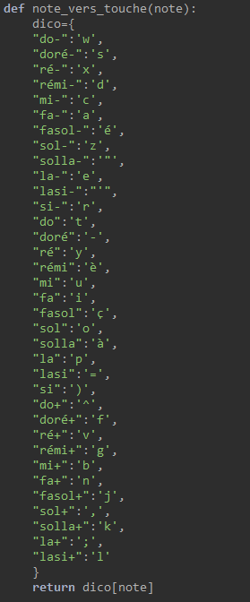

Une fois cela fait, il nous reste alors à assimiler alors les touches du clavier aux notes du piano (on va s'aider su schéma). Pour cela, nous allons définir un dictionnaire, qui va assimiler chaque note du piano virtuel par une touche du clavier, comme le schéma.
Dictionnaire Notes->Clavier
Et on va rajouter également une fonction :
Fonction pour lier les string des notes du piano au touches du clavier :

Grâce à ce dictionnaire, ces fonctions, et PyAutoGUI, on va alors commencer à lier le site au programme.
On va donc essayer de créer le lien entre le programme et le site à la page suivant :